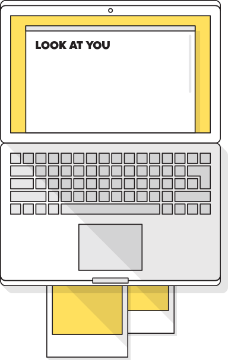
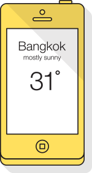
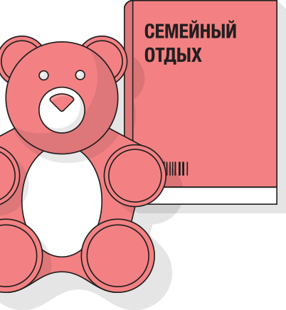
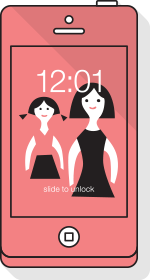
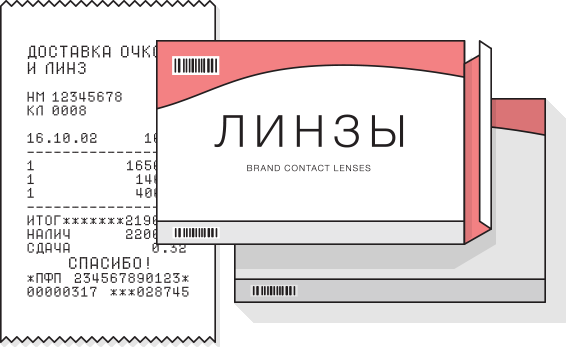
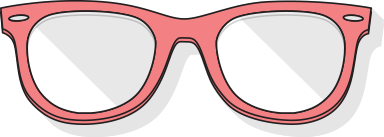
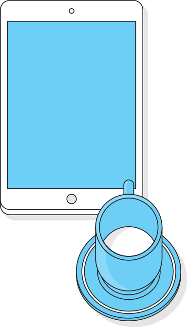
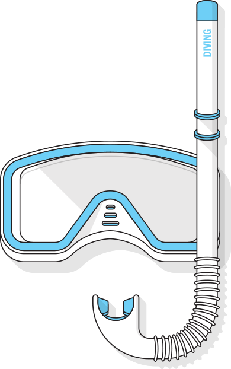

Интернет сегодня — это не только информация
и технологии, но и люди. Людей много и они все разные,
а сайты для всех пользователей обычно выглядят
одинаково. Яндекс уже научился адаптироваться под
конкретного пользователя
и готов поделиться этой
технологией с другими.
«Атом». Технологическая платформа, задача которой - предоставить сайтам возможность изменять содержание страниц под конкретного пользователя.

Максим хочет увидеть настоящий, нетуристический Таиланд.
Он планирует путешествовать по стране самостоятельно, составлять маршрут по ходу. Поэтому всё, что ему нужно, — билет на самолёт.
Для путешествия по жаркой стране Максиму нужна удобная одежда и крепкая обувь.
Он не желает тратить время на походы по магазинам, ведь интересные ему вещи можно с лёгкостью найти в интернете.
 Юра сразу покупает тур: в его ситуации так очевидно проще. Основные вводные - приемлемого качества.
Отель центре тайской жизни: чтобы и еда, и качественный пляж, достопримечательности, и рестораны.
Алексей твердо уверен, что линзы практичнее обычных очков — как минимум потому, что вместе с ними можно надеть другие очки: для плавания или солнечные.
Он привык к тому, что у него всегда есть запас одноразовых линз.
   Григорий Иоганович Дауге редко отдыхает — бизнес требует от него полной отдачи.
Друзья и коллеги, переживающие за его здоровье, подарили ему билет в Таиланд. Поспорив для вида, Григорий Иоганович решает, что здоровье важнее, и садится выбирать отель.
Даже отдых должен приносить в жизнь что-нибудь новое — таков жизненный принцип Григория Иогановича.
В этой поездке он планирует научиться дайвингу: посмотреть на коралловые рифы и причудливых морских животных.
 Мир один, а люди разные. Так и интернет — он один, но для каждого разный.
Теперь посмотрите, как планировали путешествие в Таиланд другие герои.
Помощь Обратная связь © 2013 ООО «Яндекс»
«Атом»: сценарии применения
«Атом» — это платформа, которая позволит сайтам в интернете адаптироваться под каждого конкретного пользователя. Показывать ему только интересную информацию, помогать быстрее решать задачи.
Этого можно достигнуть за счёт индивидуальных изменений, не всегда заметных самому пользователю, но делающих страницу более интересной, более удобной для него.
Презентация платформы «Атом» на конференции YaС 2013
Yet another Conference (YaС) — технологическая конференция Яндекса, которая ежегодно проходит в Москве, начиная с 2010 года.

Покупка авиабилетов
Уже в результатах поиска Максим может уточнить удобные даты и перейти сразу на сайт с подходящими ему вариантами.

Рекомендации по покупке подходящих товаров
Предложения на главной странице выбраны на основе информации о предпочтениях Максима, полученных сайтом от «Атома».

Покупка тура
В острове Алексей Быков сразу указывает параметры для поиска тура.
Из результатов убраны слишком дорогие и престижные для Алексея отели. В списке вариантов — туры, идеально подходящие для семейного отдыха с детьми.

Напоминание от интернет-магазина
Контактные линзы из прошлого заказа Алексея скоро должны подойти к концу. Сайт, на котором он обычно их приобретает, отправляет ему напоминание о повторной покупке с кнопкой перехода на предзаполненную форму заказа в один клик.

Рекомендации по подбору отеля
Список отелей, показанных на главной странице сайта бронирования, основан на полученных от «Атома» гипотезах. В списке на первых местах те отели, которые наверняка понравятся Григорию Иогановичу.

Рекомендации по покупке подходящих товаров
Сайт рекомендует Григорию Иогановичу различные товары, которые точно ему подойдут.

Закрытое тестирование «Атома»
Замысел такого масштаба невозможно воплотить в одиночку, поэтому мы уже начали проводить эксперименты с первыми партнёрами. Каким будет результат этой работы, во многом зависит от них и от других вебмастеров. У нас есть идея и технологии для её реализации, но мы не хотим двигаться дальше без ваших мыслей, мнения, опыта и осознания ваших потребностей. Всё это необходимо нам для того, чтобы превратить идею в полноценный продукт, полезный в реальных ситуациях.
Если вы хотите принять участие в развитии «Атома», то вам необходимо выполнить следующие шаги:
Если вы хотите принять участие в развитии «Атома», то вам необходимо выполнить следующие шаги:
- выбрать ключевые рубрики вашего сайта;
- установить на ваш сайт Яндекс.Метрику;
- разметить страницы каждой выбранной рубрики разными целями в Метрике.
Присылайте письмо, в котором указаны идентификаторы целей и чётко описаны те задачи, которые вы бы хотели решить с помощью «Атома».
Авторы самых интересных писем и предложений станут участниками эксперимента. Все новости и примеры мы будет публиковать в корпоративном блоге и на Хабрахабре.
Свяжитесь с нами через форму обратной связи или пишите на atom-experiments@yandex-team.ru
Читайте про «Атом» в нашем корпоративном блоге и на Хабрахабре